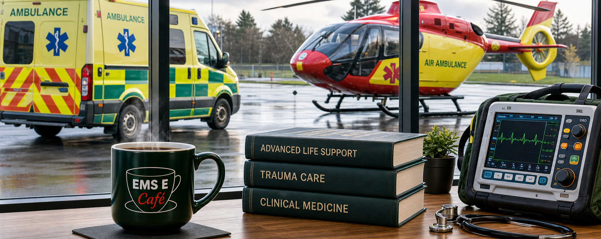

Welcome to EMS E Café
Where pre-hospital
professionals learn,
reflect and share ideas.
Independent, evidence-informed education and
Grand Rounds for Ireland’s pre-hospital community.
Evidence-InformedUp-to-date, peer-reviewed
education you can trust.
education you can trust.
Community DrivenBuilt by and for Ireland’s
pre-hospital professionals.
pre-hospital professionals.
Clinical ExcellencePromoting best practice and
continuous improvement.
continuous improvement.
Café CultureA welcoming space to connect,
learn and grow together.
learn and grow together.
What’s Happening at EMS E Café

Upcoming Grand Round
Trauma in the Pre-Hospital Environment
28 May 2025 · 19:30
Online (Live)

Latest Case
Severe Asthma Exacerbation in the Field
New Case Available
Read Case
Journal Club
Pre-hospital Ultrasound in Hypotension
Discussion now open
Join Discussion Reference Library
New Guidelines Now Available
Latest protocols and recommendations
Browse LibraryJoin Ireland’s pre-hospital learning community
Create your free account to access discussions, resources and more.